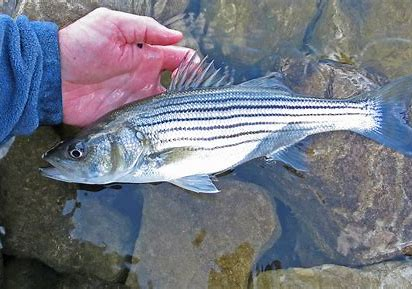

Striped Bass

Striped Bass are one of the most popular fish around the New England coast. So popular that some people consider them a trophy fish.
They are distinguished by their unique black and white stripes down their sides along with the large bass mouth. They are often found alongside Bluefish in generally rocky areas.
What They Eat:
- Bait Fish
- Bunker
- Mackerel
- Herring
- Squid
- Eels
- Clams
- Crabs
Where Striped Bass Can Be Found:
Striped Bass can be found in a variety of areas such as docks, rocky structures (break walls), or reefs.
One major thing to keep in mind is that they like to hide in/near structure.
Some Popular Spots They Are Found Around Here:
- Fort Adams, Newport RI
- Beavertail Lighthouse, Jamestown RI
- Point Judith Lighthouse, Narragansett RI
- Block Island
- North Rip
- Southeast Side of the Island
- West Side of the Island
- Charlestown Breachway, Charlestown RI